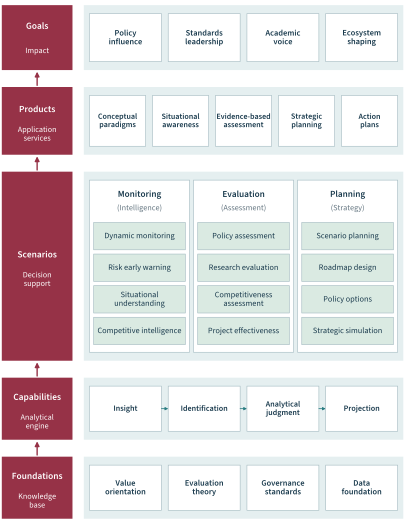
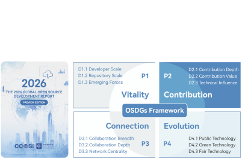
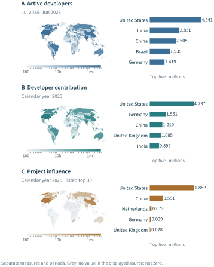
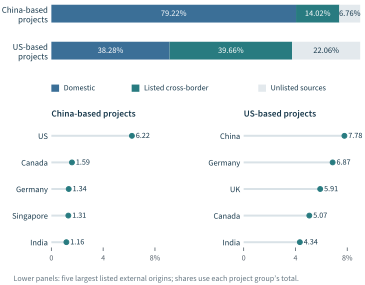
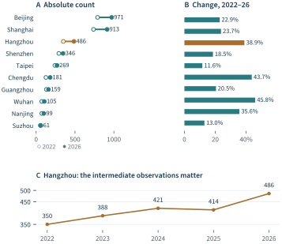
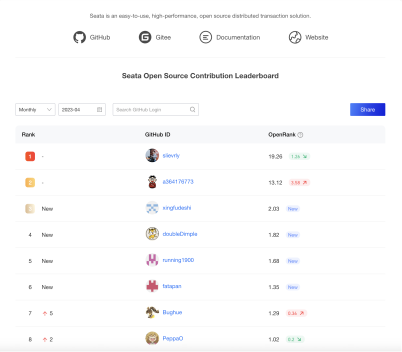
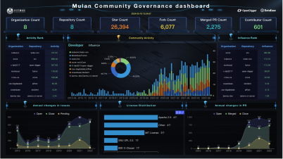
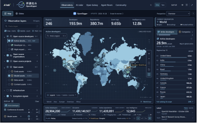
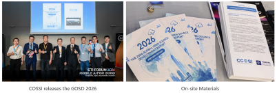

A map of open source development can answer several different questions. It can locate participating developers, attribute collaborative contributions, or show where influential projects are based. These views often produce different orders of prominence. In the geographical snapshots used in the 2026 Global Open Source Development Report, India ranks second in active participation, Germany second in developer contribution, and China second in project influence. Each result describes a particular object, measure, and period. Their differences become useful when an analyst connects them to a substantive question: which capabilities are present, which relationships sustain them, and what additional evidence would justify an intervention?
This chapter examines that connection. Parts I and II established the conceptual and measurement foundations of Open Source Evaluatology. Part III applied them to contribution recognition, sustainability, and governance. Chapter 9 concluded by asking how a bounded finding can enter strategic intelligence while retaining its conditions of interpretation. We now examine the institutional setting in which that transfer takes place: how evaluations are assembled, communicated, and used. An open source science and technology think tank connects sustained observation with the questions of governments, enterprises, foundations, communities, and universities. Its contribution is the production of interpretable knowledge for decisions, supported by an infrastructure that permits scrutiny and revision.
Our principal materials are the OpenThink practice framework, the OSDGs and OSIDX development materials, the global development report, and OpenDipper. They occupy different stages of maturity: an institutional design, an evolving indicator architecture, published analytical products, and an implemented visual exploration system. We integrate their software-ecosystem components into one account of evaluation in use. The empirical illustrations retain the scope and dates of their sources; the integration developed here supplies the chapter’s analytical argument.
The argument proceeds from a decision question to an observatory, then through global and regional evidence to visual investigation and knowledge products. The final section examines how these products enter institutional practice and what evidence of their use should be retained. Chapter 11 takes up the resulting requirements for an open tool ecosystem, shared validation, and cumulative research. Here the organizing question is how evaluation serves a decision; there it is how experience with such evaluations develops the field.
10.1 From Evaluation to Decision Support#
The decision context of a measurement#
A local authority considering support for an open source community, a company reviewing its project portfolio, and a foundation identifying maintenance needs may consult the same collaboration data. Their decisions nevertheless require different evidence. The local authority needs to understand participation in its region and the mechanisms through which support might help. The company needs to connect projects with its contribution responsibilities and technical needs. The foundation needs to examine whether essential collaborative functions can be sustained. A common measurement infrastructure becomes useful through these differences in purpose.
The question structure established in Part I remains applicable: The evaluated object or arrangement is ; identifies affected objects and relevant outcomes; describes conditions; supplies the reference; specifies the time horizon; identifies stakeholders; and states the purpose. For a regional programme, might be a proposed support arrangement rather than the region itself. Existing developer participation then describes part of , while continued participation and improved access to collaborative work may belong to . A ranking can inform this question without becoming its answer.
This distinction carries the evaluatological foundations into an application setting. Zhan et al. (2024) establish evaluation as a scientific and engineering undertaking, while our Open Source Evaluatology position paper locates open source ecosystems within that undertaking (Han et al., 2024). The present chapter develops the institutional connection: an evaluation must retain its object, reference, and conditions as it travels into a report, a dashboard, or an advisory discussion. The contribution is a coherent way to organize these transitions, illustrated with products and data from our practice.
Consider two regional objectives: enlarging the participant base and strengthening the continuity of influential collaborative work. They may be compatible, but they are not interchangeable. The first calls for observations about entry, engagement, and access. The second calls for evidence about sustained contributions, roles, and the conditions under which maintainers continue working. A programme judged only by account registrations could meet one numerical target while leaving the second objective unresolved. Specifying the decision therefore precedes choosing the headline indicator.
Knowledge, institutions, and action#
The science–policy literature gives this institutional problem a useful vocabulary. Cash et al. (2003) distinguish the relevance of knowledge to users, the credibility of its construction, and the legitimacy of the process through which it is produced. Guston (2001) examine organizations that mediate between scientific and policy communities. These contributions help explain why a technically accurate dashboard may still have little practical value: its measures may answer an unfamiliar question, arrive after the relevant decision, or exclude affected participants from interpretation.
The OpenThink framework connects these institutional requirements to five layers of practice (OpenThink materials, 2026). Figure 10.1 redraws the complete supplied architecture in English. Read from the bottom upward, it connects a knowledge base, analytical capabilities, decision-support scenarios, application services, and intended forms of influence. The foundation brings together value orientation, evaluation theory, governance standards, and data. The capability layer turns these resources into insight, identification, analytical judgment, and projection. These functions support the monitoring, evaluation, and planning activities in the central layer.

The three scenario groups give the architecture its operational content. Monitoring combines dynamic observation, early warning, situational understanding, and competitive intelligence. Evaluation addresses policies, research, competitiveness, and project effectiveness. Planning connects scenarios, roadmaps, policy options, and strategic simulation. Each group requires a different relation between evidence and judgment. A change in an activity series may initiate monitoring; assessing a support programme requires a reference and an outcome; choosing among future options requires explicit assumptions about conditions that have not yet occurred.
The upper layers express what the institution produces and seeks to influence. Conceptual paradigms, situational awareness, evidence-based assessments, strategic plans, and action plans are different classes of knowledge product. Policy influence, standards leadership, academic voice, and ecosystem shaping describe their intended reach. The cases in this chapter instantiate selected parts of this architecture. They show how observations become usable products, while the final section examines what evidence would establish their subsequent institutional effects.
This organization allows the same infrastructure to support several products without treating those products as equivalent. A comparative report offers a stable account of a defined period. A dashboard makes a selected state visible during review. A project dossier gathers evidence around a bounded object. An advisory brief relates findings to available options and their conditions. Their shared foundation reduces repeated collection work, while their different forms preserve the requirements of their users.
The design also addresses the relationship between knowledge supply and demand. Sarewitz and Pielke (2007) argue that this relationship itself requires investigation. In our setting, publishing more indicators is useful only when analysts can relate them to questions that users actually face. A regional analyst who needs to understand contributor retention gains little from a large collection of unrelated repository counts. A smaller, well-specified sequence of observations, accompanied by an explanation of its limitations, can support a more productive conversation.
Questions, audiences, and products#
Table 10.1 translates the OpenThink product matrix into an analytical design. Each row begins with an audience and a question. The evidence and product follow from that question. The table describes service designs supported by the materials; it is not a census of completed engagements or a claim that every audience has adopted every product.
| Audience | Decision question | Relevant evidence | Product |
|---|---|---|---|
| National institutions | Where are capabilities and collaborative relationships concentrated? | Participation, contribution, influence, and their attribution rules | Development report |
| Regional institutions | Which local capabilities merit further investigation or support? | Consistent city series, project composition, roles, and local conditions | Regional profile |
| Enterprises | How is the project portfolio sustained? | Project scope, contribution structure, review and release continuity | Portfolio dashboard |
| Foundations and communities | Where do stewardship needs exceed available capacity? | Maintainer roles, continuity, external participation, and governance arrangements | Community assessment |
| Universities and developers | Where can participation lead to sustained collaborative work? | Project context, contribution pathways, and evidence of learning | Project dossier or educational brief |
Adapted from the OpenThink product–audience matrix (OpenThink materials, 2026). Rows describe analytical service designs; they do not assert completed engagements with every audience.
Two responsibilities follow. First, the institution must preserve the connection between a reported finding and the observations that support it. Second, it must make room for purposes and consequences that the available data do not yet capture. Parkhurst (2017) distinguishes problems in the technical use of evidence from the narrowing of public questions through selective attention. For open source evaluation, this means that an accurate contribution ranking can still be an incomplete account of public value. Accessibility, stewardship, maintenance obligations, and the experience of affected users may require other forms of inquiry.
The think tank’s role is therefore to make a decision better informed and more inspectable. It does this by identifying a relevant observation, explaining why it matters, examining plausible interpretations, and showing what remains to be learned. The following sections develop this role through the observatory and its applications.
10.2 Goals, Indicators, and Observatory Design#
Development goals and observable questions#
The Open Source Development Goals, or OSDGs, articulate what a developing open source ecosystem should be capable of sustaining. The preview materials in Figure 10.2 express this agenda through four families: Vitality, Contribution, Connection, and Evolution. Each family contains three indicator headings. Developer and repository scale characterize vitality; contribution depth, value, and technical influence make collaborative work visible; breadth, depth, and centrality describe connection; public, green, and fair technology express the intended direction of development.

The subsequent OSIDX and report materials organize the agenda around talent and diversity, technological output and open supply, global connection and network effects, and governance and public value (Wang, 2026; X-lab2017, 2026). This evolution makes the version of the framework part of the evidence. The preview graphic provides a visible account of the initiative’s conceptual development; the later working definitions supply the context for interpreting the current report. Their headings should therefore be retained as versioned formulations rather than silently combined into one unchanged taxonomy.
For the software-ecosystem analysis developed here, these materials lead to four complementary questions. Who participates, and under what conditions can participation continue? What capabilities are created and maintained? How are contributions and influence distributed across collaborative relationships? How are responsibilities organized, and what public consequences follow? Participation measures, project histories, network observations, and evidence of governance or use answer different parts of this agenda. Their value lies in connecting a development goal to an observable question.
The distinction between an agenda and an implemented measure is consequential. The current report’s indicator architecture contains 29 working definitions, but their inclusion in the architecture does not establish that every corresponding series is available, comparable, and validated. An observatory should be able to display an important question as unresolved. Otherwise the availability of convenient data gradually determines the meaning of development, and difficult dimensions disappear from the framework.
This approach also explains why the chapter uses a profile of complementary observations rather than constructing a new composite score. Aggregation introduces choices about normalization, weighting, substitutability, and missing data. The OECD handbook treats these choices as substantive parts of indicator construction (OECD et al., 2008). In the cases developed here, the value lies in exposing differences among participation, contribution, influence, and institutional arrangements. Combining them prematurely would conceal the very distinctions needed to formulate an appropriate response.
Distinct roles within the observatory#
Several names recur in the practice materials. OSDGs supplies the goal framework. OSDI supplies an indicator architecture in the development report. OSIDX names the associated data and index development initiative. OpenDigger supplies collaboration-data analysis and measurement capabilities; OpenRank provides a model for interpreting relational influence under specified construction rules. OpenDipper supplies interfaces for observation and project investigation. The report assembles selected analyses into a stable knowledge product.
These are functional roles across related projects. They should not be read as a claim that a single fully automated implementation already connects every goal to every policy outcome. The OpenDigger framework provides an implemented measurement foundation (Wang et al., 2026); Chapters 4–6 examine its data, activity, and influence methods in detail. This chapter takes those foundations forward by showing how their outputs can be organized around decision questions. It does not redefine the algorithms when the audience changes.
A useful observatory needs at least three separations in its information model. It distinguishes the entity observed from the category to which that entity is attributed; the observation period from the date on which a file was generated; and a measured value from the interpretation attached to it. A repository may be attributed to an organization, a developer to a location, and a project to a technical field. These assignments support different aggregations. None is a substitute for the others.
For a measure , let an observation be represented as
where is an entity identifier, the value, its unit, the observation window, its scope and availability status, and its provenance. This notation summarizes the information needed when a measurement is carried into a product; it is not a new metric. The status distinguishes a reported zero from an unavailable observation. Provenance connects the displayed result to a source and a version. Both are necessary when a report outlives the interface through which it was first examined.
The FAIR principles offer a broader basis for making research objects discoverable, interpretable, and reusable (Wilkinson et al., 2016). For the present application, a practical consequence is that the chart, its machine-readable values, and its definition should remain connected. A downloadable table without an observation window is difficult to reuse correctly. A compelling map without its underlying values cannot readily be checked. A source link without a retained version may eventually lead to different evidence.
Attribution and temporal coherence#
Geographical aggregation illustrates the consequences of these distinctions. Suppose is a source-defined measure for entity , and is its attribution weight to region under mapping version . A regional aggregate can be expressed as
This expression makes the measurement population, period, and attribution rule visible. Where each entity is assigned to at most one region, the weights can be binary. Fractional attribution requires a separately documented rule. An unattributed record remains outside the attributed total unless an explicit residual category is retained. Equation 10.2 specifies a design requirement; the public aggregates examined below do not expose all the individual assignments needed for an independent reconstruction.
Developer location and project location also have different meanings. A developer may contribute to a project associated with another region. The project’s hosting organization may itself operate internationally. Consequently, developer-attributed contribution and project-attributed influence can yield different geographical distributions even when they derive from related collaboration data. Their difference is analytically useful; it does not imply that one of the two maps must be incorrect.
GitHub observations require an additional boundary. Repository activity, account metadata, and public collaboration traces provide a rich but selective view of software work. The methodological analysis of Kalliamvakou et al. (2014) supports treating platform records as observations with coverage and interpretation constraints. A think tank must state those constraints at the point of comparison, particularly when extending from public GitHub activity to a claim about an entire region’s technological capacity.
Temporal coherence deserves the same attention. The global report uses both a July–June reporting year and calendar-year map snapshots. The OpenDipper code network has a third window, August 2025–July 2026. These products can be discussed together, but an analyst cannot silently turn them into one synchronous panel. The cases below preserve each window. Where the evidence supports a comparison of perspectives, we make that comparison; where it would require a common denominator or aligned observations, we leave the stronger calculation unmade.
10.3 Mapping Global Open Source Development#
Three maps, three objects of inquiry#
The 2026 Global Open Source Development Report is the principal global knowledge product used in this chapter (X-lab2017, 2026). We use its public repository snapshot of 22 October 2026, including the published V-Map text and the associated machine-readable exports. The report’s usual 2026 window runs from 1 July 2025 to 30 June 2026. Its contribution and influence maps retain calendar-year 2025 metadata. The distinction is visible in Figure 10.3.
The first panel describes active developer participation. The source provides 239 regional records and a global active-developer measure of approximately 28.904 million. The five largest reported regional values are the United States, 4.941 million; India, 2.851 million; China, 2.505 million; Brazil, 1.935 million; and Germany, 1.419 million. The export contains fractional aggregate values. We preserve those values in the underlying data and round them for display; we do not reconstruct them as an independently verified census of unique individuals.
The second panel attributes OpenRank contribution to developers’ regions. It contains 236 regional records. The United States contributes 4.237 million score units, Germany 1.551 million, China 1.210 million, the United Kingdom 1.085 million, and India 0.899 million. Here a value expresses a source-defined collaboration measure, not a count of people or projects. Its interpretation relies on the measurement foundations developed in Part II.
The third panel attributes project influence to project regions. The exported geographical leaderboard contains the leading 30 regions. The United States has 1.882 million score units and China 0.551 million, followed by the Netherlands, Germany, and the United Kingdom. The report’s separate global series gives a 2025 project-influence total of 2.739 million. The United States and China together account for approximately 88.8% of that reported total. This percentage uses the global series as its denominator, rather than treating the listed top 30 as a complete census.

The three panels reveal a useful asymmetry. A broad participant base, a strong contribution position, and a concentration of influential projects are distinct ecosystem properties. India and Brazil are prominent in participation. Germany occupies a stronger position in developer contribution than in project-attributed influence. The Netherlands ranks third in the listed project-influence distribution. These observations invite examination of project portfolios, contributor roles, and attribution practices. They do not establish a causal explanation for the differences.
The map is particularly useful for communicating spatial structure, while the bars make magnitude easier to compare. A large country occupies more visual area even when its value is modest; a small country can have substantial influence while remaining difficult to see. The paired design supplies both forms of reading. Missing values remain visibly separate from low values. This is essential in the influence panel, where absence often reflects the limited export rather than an observed absence of influential activity.
From geographical patterns to capability questions#
An analyst can turn these observations into a sequence of questions. Where is participation expanding? Which kinds of work account for a region’s contribution? Which projects concentrate influence, and what organizations and communities sustain them? Where do contributors and project stewardship cross geographical boundaries? These questions move from the distribution of an outcome to its possible organizational and collaborative basis.
Research on the geography of open source software provides an important point of comparison. Wachs et al. (2022) document geographical concentration at several scales and show why subnational patterns matter even in globally distributed collaboration. Our report extends the practice setting through complementary measures and a recurring knowledge product. The chapter does not combine the studies’ samples into a new time series: their collection methods, populations, and periods differ. The relevant connection is the analytical need to examine both global dispersion and local concentration.
Two familiar shortcuts would weaken the resulting advice. Dividing project influence by active developers would appear to yield a productivity rate, but the numerator and denominator refer to different objects and, here, different periods. Treating a region’s aggregate position as a description of each of its developers would introduce a further error. The distinction between group-level and individual-level relationships is the central concern of Robinson (1950). Regional profiles can identify questions for investigation; individual recognition still requires the contribution evidence examined in Chapter 7.
A more useful interpretation retains a profile. A region with broad participation may warrant inquiry into pathways from initial engagement to sustained roles. A region with concentrated project influence may warrant inquiry into the maintenance of a small set of important projects. A region contributing strongly to projects located elsewhere may warrant inquiry into the visibility and recognition of its collaborative work. These are candidate questions suggested by the observations, not tested diagnoses of the named regions.
The geographical origins of project contributions#
The report’s comparison of contribution origins makes cross-border relationships more explicit. Figure 10.4 redraws its top-ten source table for China-based and US-based project groups. This comparison uses the report-year sample. It is separate from the calendar-year contribution map and from the report’s contribution-flow dataset. Keeping these sources distinct avoids a superficially coherent picture assembled from different denominators.
For China-based projects, the table attributes 79.22% of contribution to domestic sources, 14.02% to the listed external sources, and leaves 6.76% outside the listed top ten. For US-based projects, the corresponding shares are 38.28%, 39.66%, and 22.06%. The remainder is computed from the source’s rounded percentages. It is shown as unlisted contribution, rather than assigned to a verified geographical category. The largest listed external source for China-based projects is the United States at 6.22%; for US-based projects it is China at 7.78%.

The figure supports an observation about the reported samples: US-based projects draw a larger listed share of contribution from outside their attributed location. That observation can inform questions about community reach, collaboration channels, documentation, and contributor experience. It does not identify the reason for the difference. Project age, technical field, sample selection, contributor attribution, and organizational concentration are all possible influences that need separate examination.
The practical unit of follow-up should therefore be smaller than the national aggregate. An analyst could identify which project groups account for the pattern, compare projects in similar fields and stages of development, and examine how external contributors enter and sustain participation. Chapters 7–9 supply the relevant distinctions among contribution, continuity, and authority. International participation alone does not establish shared governance, just as domestic participation alone does not establish a closed community.
Table 10.2 summarizes how the global and regional evidence can enter an advisory process. Each finding is accompanied by an interpretation of limited scope, a possible response, and the additional evidence needed to assess that response. This is the core movement from observatory output to decision support: the result becomes useful through a reasoned connection to a choice, with the conditions of that connection made explicit.
| Observed finding | Bounded interpretation | Candidate response | Evidence needed next |
|---|---|---|---|
| Different leading regions across the three maps | Participation, contribution, and project influence describe distinct properties | Investigate the projects and roles behind a regional profile | Aligned periods, population coverage, and attribution histories |
| Different contribution-origin shares in the two project groups | The reported samples have different source compositions | Examine access to sustained cross-border participation | Comparable projects; contributor entry, retention, and role histories |
| Hangzhou: 350 to 486, with an intervening decline | Net growth coexists with variation within the period | Investigate which local collaborative functions changed | Individual membership, projects, institutions, and programme exposure |
| Complementary measures in the Nacos and Mulan dashboards | Project operations and community portfolios require different review scopes | Examine the collaborative functions behind a change | Project histories, role assignments, and maintainer evidence |
Findings derive from the report and the supplied Open Source Evaluatology applications. Responses are proposals developed in this chapter, not observed interventions or estimated effects.
10.4 Regional and Organizational Applications#
Regional scale and development trajectories#
National maps compress substantial variation. A regional programme needs to know whether a measured base is large, how it has changed, and which collaborative roles and projects sustain it. The report’s fixed ten-city talent series offers a compact example. Figure 10.5 uses the same ten cities over the 2022–2026 reporting years, preserving the published values throughout. It avoids combining that series with the separate July 2026 city-map snapshot.
Beijing rises from 790 to 971 source-defined talent records; Shanghai from 738 to 913; and Hangzhou from 350 to 486. Shenzhen rises from 292 to 346, while the smaller starting populations of Chengdu and Wuhan grow from 126 to 181 and from 72 to 105. The fixed ten-city total increases from 2,868 to 3,590. Beijing and Shanghai together account for 356 of the 722 additional records, or 49.3% of the net increase in this selected group.
Absolute and relative changes answer different questions. Wuhan’s increase of 33 records is 45.8% of its starting value; Chengdu’s increase of 55 is 43.7%; Hangzhou’s increase of 136 is 38.9%. A percentage-only ranking would emphasize the smaller bases, while an absolute-change ranking would emphasize larger additions. Neither is sufficient for choosing a programme. A useful regional profile presents both and then asks which capacity the proposed programme is intended to improve.

The intermediate observations add a further distinction. Hangzhou’s series is 350, 388, 421, 414, and 486. The endpoint increase therefore coexists with a decline between the 2024 and 2025 reporting years. A smooth trend fitted through the endpoints would erase that information. The local question becomes more precise: which projects, contributors, or attribution changes account for the dip and subsequent rise? Answering it requires the underlying records and their histories.
Version control is especially important here. The newer indicator materials describe high-influence talent using a top-5% rule, while earlier slides also use a fixed OpenRank threshold. These definitions cannot be interchanged. We reproduce the report’s annual series as its published series and do not retrospectively relabel the earlier threshold-based slide results. The release does not expose every individual membership and tie-handling decision needed to recompute the city counts independently. A policy analysis requiring that reconstruction would need the corresponding population, period, and selection rules.
From a regional observation to a bounded intervention#
For a regional analyst, Hangzhou provides a worked example of question formation. The source shows a substantial base, a net increase, and a non-monotonic path. A first follow-up could examine which technical fields and projects account for the count. A second could distinguish continuing contributors from newly observed participants. A third could examine whether local institutions provide the time, mentoring, and coordination required for sustained participation. These steps connect the aggregate to mechanisms that a regional institution might influence.
The corresponding intervention should be specified at that level. A programme might support maintainers’ time, improve newcomer pathways, or make shared infrastructure available to communities. Its evaluation would then observe the function it intends to change. If the goal is continued maintenance, retention in relevant roles and the continuity of review and release work are more informative than a change in a general regional ranking. If the goal is access, the experiences of participants who previously faced barriers become part of the evidence.
This reasoning follows the distinction between measurement and evaluative judgment developed throughout the book. The ten-city chart establishes a descriptive pattern. It helps select questions and possible sites of inquiry. It does not establish that a particular policy caused the pattern or that the same intervention would have the same effect elsewhere. A comparison of programmes would need an appropriate reference and a record of their conditions, as specified by .
Practical regional work also requires denominators. Talent per resident, per employed software worker, and per observed developer would each express a different relationship. The relevant population data would need the same spatial boundary and a compatible time period. For that reason, Figure 10.5 presents counts and changes from one consistent source instead of borrowing a population denominator from a differently dated presentation. The resulting profile is narrower, but its meaning is clear.
Project, developer, and community applications#
Our Open Source Evaluatology position paper documents three implemented applications: the Nacos operation dashboard, Alibaba’s open source contribution leaderboard, and the Mulan community governance dashboard (Han et al., 2024). Figure 10.6 reproduces the paper’s Figures 4–6 as three panels. Together they show how an evaluation infrastructure changes form when its immediate object changes from a project, to a contributor, to a community portfolio. The images retain their historical English interfaces and numerical displays.
Project operations: Nacos.#
The first application combines OpenDigger data services with the DataV presentation stack. Its Nacos-centred view juxtaposes activity and OpenRank trajectories, participant counts, issue and pull-request observations, a collaboration network, and contributor rankings. The comparison includes Nacos, ZooKeeper, Consul, and Apollo. An operator can therefore read the focal project in relation to a selected peer group while inspecting several aspects of collaborative work within the same display.

The juxtaposition is analytically useful because activity and influence answer different questions. Activity describes the volume and composition of observed participation; OpenRank adds the relational evaluation developed in Chapter 5 and implemented through the services examined in Chapter 6. Issue and pull-request views bring the reading back to concrete work. If two trajectories diverge, the analyst can inspect the contributing projects and roles before attributing the change to a community condition. The dashboard supplies a way to formulate and investigate that question. Its comparative layout also makes the reference group visible, although a technology-selection decision would require additional evidence about the candidates’ technical suitability.
Contributor recognition: the Alibaba leaderboard.#
The second application turns evaluation into a recurring recognition mechanism. The position paper describes Alibaba’s monthly contribution incentive practice; its illustration is the Seata Open Source Contribution Leaderboard for April 2023. The interface combines a period selector, a GitHub identity search, ranked OpenRank scores, score changes, and markers for new entries. Recognition is thus attached to a named project and a defined review period, making the relationship between the observation and its recipient inspectable.

For an enterprise or an open source programme office, the practical question is how to recognize contributions that support shared projects. The leaderboard creates a regular point of contact between measurement and community operation. Chapter 7 examines contribution recognition in greater depth; here the application shows how the same measurement foundation becomes a public-facing service. The score can inform recognition while maintainers retain responsibility for interpreting roles, reviewing exceptional cases, and acknowledging work that the recorded network represents incompletely. A visible rank alone does not establish the effect of the incentive on participation.
Community governance: Mulan.#
The third application brings multiple projects into an incubation and governance view. The Mulan dashboard displays organization and repository counts, contributor and merged-pull-request totals, activity and influence rankings, a community activity series, issue and pull-request histories, and a licence distribution. Its historical state covers eight organizations and eight repositories. The combination allows a community operator to move between a portfolio summary, project differences, and changes over time.

The position paper reports the use of community evaluation to identify participation and coordination concerns and to formulate operational responses. The displayed dashboard makes the supporting information service concrete. A portfolio-wide rise can nevertheless conceal a maintenance gap in an individual project; work can also move between repositories while a useful capability continues. Chapter 8 supplies the distinction between repository-level change and continuity of function, while Chapter 9 distinguishes observed contribution from authority and responsibility. These distinctions remain necessary when a dashboard enters a governance discussion.
The three applications establish an important connection to the think-tank architecture. A project dashboard serves monitoring and diagnosis; a contribution leaderboard supports an operational recognition practice; a community dashboard supplies recurring portfolio intelligence. Their purposes differ, but their measures remain connected to the same data and methodological foundations. The think tank can draw on this application experience when designing a regional profile, comparing communities, or preparing an advisory product. Practice supplies both usable evidence and questions that return to evaluation theory.
The progression is now from the global landscape, through regional scale and trajectory, to the collaborative units in which decisions are implemented. Interactive ecosystem exploration adds another connection: it helps analysts discover relevant projects and relationships before assembling evidence around a particular decision.
10.5 Visual Investigation with OpenDipper#
Analytical tasks and interface design#
OpenDipper connects geographical observation with project-level investigation. The public implementation offers selectable observation layers, regional details, source and scope explanations, a code-network view, and exportable project reports. The supplied system manuscript examines the underlying exploration and reporting functions (OpenDipper project, 2026). We use the software-oriented subset here, together with a recorded inspection of the public interface on 1 November 2026.
Figure 10.7 shows the observatory in dark mode with the active-developer layer selected and World as the current observation. The right-hand panel exposes the global value, its July 2025–June 2026 window, and a regional top-ten list. The source-and-scope control makes the meaning of the selected layer available during inspection. These functions help an analyst move from an overview to a specific observation without detaching the value from its definition.

The design can be understood through established visualization research. Shneiderman (1996) distinguishes overview, filtering, inspection, and extraction tasks. Brehmer and Munzner (2013) separates why an analysis is undertaken, how it is performed, and what information enters or leaves the task. In our application, “find a region” is an interaction; “understand whether a regional participation base warrants further investigation” is its purpose. Keeping both explicit makes it easier to assess whether the interface serves a useful evaluation question.
The choice of visual encoding should follow the same logic. A choropleth identifies geographical patterns, a ranked bar chart supports magnitude comparison, a time series exposes change, and a network view exposes recorded relations. Putting all four on a screen does not by itself create an analysis. The user needs a coherent sequence in which a selection changes the next question and the relevant evidence follows it. Heer and Shneiderman (2012) describe interaction as a set of operations supporting such analytical work; the OpenDipper implementation applies these operations to source-qualified ecosystem observations.
The interface also demonstrates why presentation and evidence must be distinguished. Its animated activity area includes simulated increments and illustrative event streams. These features can explain a product concept, but they cannot be used as observations of current global activity. For the figures and calculations in this chapter, values come from the retained report exports and documented source-network metadata. The interface illustration documents what a user can inspect, with simulation labels preserved.
From geographical distributions to project relationships#
Geography and collaboration describe different forms of proximity. Two developers can work in different regions while contributing to the same project. Two repositories can share contributors without either depending technically on the other. OpenDipper’s code galaxy offers a complementary view of this second form of relationship.
The retained source network contains 19,771 GitHub repositories and 106,650 shared-contributor affinity edges for August 2025–July 2026. It is the connected subset retained after selection and edge pruning from a top-20,000 candidate set. Its scope is therefore an observed network sample, not an inventory of all open source projects. Edges express overlap among known non-bot contributors. They do not establish a software dependency, a contractual relationship, or direct coordination between project organizations.
Node size also has a specific meaning. The imported code-network weight is the sum of twelve inherited monthly Global OpenRank values. For repository , the displayed summary can be written as
It summarizes the supplied monthly scores; it is not a newly computed annual centrality on a graph pooled across the year. This distinction connects the interface to the relational definitions in Chapter 5 and the versioned services in Chapter 6. A visual representation should preserve the measurement operation rather than silently replacing it with a more convenient label.
The source coordinates are layout positions. Their distances help organize the display but do not measure geographical distance or a calibrated degree of technical similarity. A neighborhood can be useful for finding related projects precisely because the relation is explicit. It becomes misleading if visual proximity is allowed to stand in for an unspecified form of dependence or quality.
Open Galaxy: exploration and research products#
Open Galaxy places project discovery, relationship exploration, and evidence collection in one workspace. Figure 10.8 reproduces the authors’ dark-mode overview of the module within OpenDipper. Its spatial display provides an entry into a large network, while the adjacent controls allow a user to search names or tasks, select a domain, filter by entity type and programming language, and inspect a list of landmarks. The interface makes discovery a visible part of the evaluation process: the analyst must decide which objects warrant closer attention before comparing them.

The overview contains two collections, with separate Code and Models controls. Its 43,771-node inventory combines 19,771 code repositories with 24,000 model, dataset, and Space records. The rounded “126K recorded relations” label likewise combines recorded relations from the two collections. It is not the edge count of the code graph. The code-network analysis here retains the 106,650 shared-contributor edges and the August 2025–July 2026 period defined above. The second collection has a separate source snapshot, shown as 5 August 2026. Keeping these identities explicit allows the interface to bring collections together without turning them into a single, methodologically homogeneous population.
For a software-oriented investigation, the analyst begins with the Code view and a question that bounds the search. A community development team might seek projects in a particular technical field that connect otherwise separate groups of contributors. A programme office might investigate where several projects share maintenance participants. Domain and language filters help form an initial set of candidates; the network then exposes recorded connections that a list of independent rankings would conceal. The visible landmarks, such as llvm-project and nixpkgs, help orient exploration. Their prominence in the drawing initiates inquiry rather than deciding which project should receive support.
The next step is to inspect a selected project’s neighborhood. Shared contributors indicate an observed overlap between projects. Following a recorded path can expose intermediate projects through which an analyst might investigate that overlap. Neither operation establishes technical dependency or common governance. The useful question is what work creates the relation: packaging, integration, review, documentation, or another collaborative function. Project records and maintainer knowledge are needed to distinguish these possibilities. The graph makes the search tractable by locating candidate relations within a defined source network.
Open Galaxy then allows up to three research objects to be placed on a shortlist and supports the export of source-qualified reports in Markdown, HTML, or JSON. This turns an exploratory session into an inspectable product. A subsequent reviewer can examine the selected identities, source periods, available relations, and gaps in the record without reproducing every navigation step. The important transition is from a visually discovered pattern to a bounded claim that another analyst can check.
This workflow has a direct role in the think tank’s product family. A global or regional observation identifies an area for inquiry; Open Galaxy helps locate the projects and collaborative relations that may explain it; a retained report carries that inquiry into a briefing or a community discussion. For example, a regional profile showing a substantial contributor base could lead to an investigation of which projects connect that base to wider collaboration. Completing such an inquiry would require a compatible geographical attribution layer. The galaxy supplies relational evidence, while the geographical inference must retain its own data and conditions.
The supplied system manuscript evaluates record coverage, selected query behaviour, report contents, and function execution times. These are forms of evidence about the implemented system. Assessing its value for an analyst requires a complementary study. Munzner (2009) distinguishes domain questions, data and task abstractions, visual encodings, and algorithms as different levels of design and validation. Sedlmair et al. (2012) explains how problem-driven design studies connect these choices to domain users. For Open Galaxy, useful tasks include forming a defensible shortlist, explaining an edge correctly, identifying a period mismatch, and carrying a traceable finding into a brief. Chapter 11 places this task-oriented validation within the wider evaluation system.
10.6 Knowledge Products and Institutional Use#
A shared evidence base for knowledge products#
The cases in this chapter suggest a product family whose members serve different stages of inquiry. A global report provides a stable comparative account. A regional profile supplies a smaller set of relevant observations. A community dashboard supports recurring review. A project dossier preserves the results of focused investigation. An advisory brief relates those results to a choice and the conditions under which a response may be appropriate.
Their common core is a question, a set of observations, an interpretation, and a record of the evidence still required. What changes is the degree of compression and the expected interaction with the reader. A dashboard allows the reader to explore; a brief must select and explain. A published report should remain stable enough to cite, while the underlying observatory can continue to update. A versioned connection between them permits both timeliness and reproducibility.
This organization helps avoid two practical failures. One is to reproduce the same indicators in every product regardless of the audience’s decision. The other is to rewrite each product so extensively that the same number acquires a different definition in each setting. A shared observation model, such as Equation 10.1, allows the presentation to change while the source, unit, window, and scope remain intact.
The OpenThink materials describe this relationship through a matrix of products and intended users (OpenThink materials, 2026). We have made it operational here through the global report, the ten-city profile, the Nacos and Mulan dashboards, the contribution leaderboard, and the Open Galaxy investigation workflow. These examples demonstrate several forms of evidence delivery. The remaining question is what happens when those products enter institutional practice.
What dissemination establishes#
The global development report also illustrates how an evaluation product enters public discussion. The supplied July 2026 activity report records international presentation and exchange around the preview edition and its framework materials (CCOSI, 2026). The authors’ photographs in Figure 10.9 provide a complementary record of the report’s release and on-site printed materials. The cover seen in Figure 10.2 is thus connected to a tangible dissemination activity.

Dissemination is an important accomplishment for an emerging field. It gives potential users a common reference, makes the framework available for criticism, and creates opportunities to learn which questions are missing. The preview’s later development into a public report repository also illustrates how a knowledge product can remain open to correction. Nevertheless, the evidence needed to establish reach differs from the evidence needed to establish use.
Weiss (1979) shows that research can enter decisions in several ways, including gradual changes in how a problem is understood. This is relevant to a new field such as Open Source Evaluatology. A report may first change the vocabulary of a discussion: participants begin to distinguish activity from influence, or contribution from stewardship. Such conceptual use matters, but it requires evidence of the discussion or its subsequent products. It should not be inferred solely from distribution counts or photographs.
Research on evidence use also emphasizes timely access and relationships between researchers and decision-makers (Oliver et al., 2014). That literature, developed largely in other policy fields, provides a useful design consideration rather than an estimated effect for our setting. For an open source think tank, recurring exchanges with maintainers, programme staff, and community organizations can help identify whether the published observations answer their actual questions. The resulting record of questions and revisions is itself a valuable part of the evaluation process.
Institutional learning and theoretical revision#
Table 10.3 distinguishes the evidence already present in the materials from the evidence needed for stronger claims. Published files and retained data establish a product. Accessible features and exported reports establish functionality. Event materials establish dissemination. Documented references in a decision process would establish a form of uptake. An improvement in the consequences of decisions requires an additional evaluative design.
| Claim | Evidence in the present materials | Additional evidence for a stronger claim |
|---|---|---|
| Product exists | Report files, retained data, figures, and framework materials | Stable release identification and continued access |
| Function operates | Observed interface actions and exported project dossier; system-paper evaluations | Task coverage, accessibility, and representative user studies |
| Product circulated | Preview reports and documented on-site exchanges | Audience and follow-up records |
| Evidence entered a decision | Not established by the supplied event record | A decision brief, minutes, or interviews linking a specific product to deliberation |
| Decision consequences improved | Not established in the present chapter | Defined outcomes, a suitable reference, contextual evidence, and an evaluative design |
The distinctions prevent dissemination, uptake, and consequences from being treated as interchangeable evidence. They also specify what a continuing programme of institutional observation should collect.
A practical record of institutional use can remain compact. It should identify the question brought by a user, the product version consulted, the finding taken into the discussion, the interpretation agreed or contested, and any subsequent action. Where a decision changes, the record should state which other considerations were involved. Where a product is unused, the reason may be equally informative: the evidence arrived too late, the unit of analysis was unsuitable, or a decisive dimension was missing.
These observations can improve the theoretical system in three ways. First, they reveal whether the evaluation object was specified at the right level. A region may prove too broad when a programme acts on particular communities; a repository may prove too narrow when a capability is maintained across several projects. Second, they reveal whether a measure captures the function relevant to the decision. A prominent score may fail to expose a maintenance bottleneck, while a less visible role-based observation may prove decisive. Third, they reveal which references and time horizons support a fair comparison.
Practice can, in turn, refine the theoretical framework. Evaluatology specifies the question, conditions, reference, and intended consequences. The OpenDigger and OpenRank infrastructure makes selected aspects observable. The report, dashboards, and OpenDipper expose those observations to users’ questions. Experience with these products can identify definitions, attribution rules, coverage, or interpretations that need revision. The application thereby contributes to the development of the field.
The cases connect global observation, regional and organizational diagnosis, and project investigation. Their common achievement is to carry a defined observation into a product that can inform a decision. They also identify what the wider field must maintain: interpretable definitions, traceable transformations, suitable comparisons, and a record of use. Chapter 11 develops these requirements through the disciplinary framework, the tool ecosystem, and shared research practice. Institutional experience thereby becomes evidence for improving evaluation itself.
References#
Brehmer, M., and Munzner, T. (2013). A multi-level typology of abstract visualization tasks. IEEE Transactions on Visualization and Computer Graphics, 19(12), 2376–2385. DOI: 10.1109/TVCG.2013.124.
Cash, D. W., Clark, W. C., Alcock, F., Dickson, N. M., Eckley, N., Guston, D. H., Jäger, J., and Mitchell, R. B. (2003). Knowledge systems for sustainable development. Proceedings of the National Academy of Sciences, 100(14), 8086–8091. DOI: 10.1073/pnas.1231332100.
CCOSI (2026). Summary of the Open Source Innovation Committee’s Side-Event Activities. Chinese-language presentation supplied by the authors, 20 July 2026, especially slides 7–8. English title translated for this bibliography.
Guston, D. H. (2001). Boundary organizations in environmental policy and science: An introduction. Science, Technology, & Human Values, 26(4), 399–408. DOI: 10.1177/016224390102600401.
Han, F., Zhao, S., Wang, W., Zhou, A., Qian, W., Zhou, X., Peng, J., You, L., Chen, Y., Xia, X., Tang, Y., Yang, L., and Tian, C. (2024). Open Source Evaluatology: An evaluation framework and methodology for open source ecosystems based on evaluatology. BenchCouncil Transactions on Benchmarks, Standards and Evaluations, 4(4), 100190. DOI: 10.1016/j.tbench.2025.100190. Assigned to the December 2024 issue; DOI and online publication are dated 2025. Figure 10.6 reproduces Figures 4–6 of the author-supplied manuscript.
Heer, J., and Shneiderman, B. (2012). Interactive dynamics for visual analysis. Communications of the ACM, 55(4), 45–54. DOI: 10.1145/2133806.2133821.
Kalliamvakou, E., Gousios, G., Blincoe, K., Singer, L., German, D. M., and Damian, D. (2014). The promises and perils of mining GitHub. In Proceedings of the 11th Working Conference on Mining Software Repositories, pp. 92–101. DOI: 10.1145/2597073.2597074.
Munzner, T. (2009). A nested model for visualization design and validation. IEEE Transactions on Visualization and Computer Graphics, 15(6), 921–928. DOI: 10.1109/TVCG.2009.111.
OECD, European Union, and European Commission Joint Research Centre (2008). Handbook on Constructing Composite Indicators: Methodology and User Guide. OECD Publishing, Paris. DOI: 10.1787/9789264043466-en.
Oliver, K., Innvar, S., Lorenc, T., Woodman, J., and Thomas, J. (2014). A systematic review of barriers to and facilitators of the use of evidence by policymakers. BMC Health Services Research, 14, Article 2. DOI: 10.1186/1472-6963-14-2.
OpenDipper project (2026). OpenDipper: Interactive Maps and Project Reports for Open-Source and AI Ecosystems. Unpublished system manuscript supplied by the authors, version 1.0; no assigned DOI. This chapter uses its code-network and reporting components. Implementation: https://github.com/X-lab2017/open-dipper, revision
36c45a5bc28c(1 November 2026). Public interface: https://www.x-lab.info/open-dipper/, inspected 1 November 2026. Code graph imported from https://github.com/YaoYao-Pig/OG-And-HG-2026, revision7f69f2fbd278.OpenThink materials (2026). Building China’s Open Source Science and Technology Think Tank: Enabling National Technological Self-Reliance through Scientific Evaluation. Unpublished Chinese-language practice and development manuscript, supplied by the authors, undated; paired with the January 2026 presentation of the same initiative, especially slides 4 and 13–15, with the five-layer framework image supplied on 1 November 2026. English titles translated; publication status unverified.
Parkhurst, J. (2017). The Politics of Evidence: From Evidence-Based Policy to the Good Governance of Evidence. Routledge, Abingdon. DOI: 10.4324/9781315675008.
Robinson, W. S. (1950). Ecological correlations and the behavior of individuals. American Sociological Review, 15(3), 351–357. DOI: 10.2307/2087176.
Sarewitz, D., and Pielke, R. A., Jr. (2007). The neglected heart of science policy: Reconciling supply of and demand for science. Environmental Science & Policy, 10(1), 5–16. DOI: 10.1016/j.envsci.2006.10.001.
Sedlmair, M., Meyer, M., and Munzner, T. (2012). Design study methodology: Reflections from the trenches and the stacks. IEEE Transactions on Visualization and Computer Graphics, 18(12), 2431–2440. DOI: 10.1109/TVCG.2012.213.
Shneiderman, B. (1996). The eyes have it: A task by data type taxonomy for information visualizations. In Proceedings of the IEEE Symposium on Visual Languages, pp. 336–343. DOI: 10.1109/VL.1996.545307.
Wachs, J., Nitecki, M., Schueller, W., and Polleres, A. (2022). The geography of open source software: Evidence from GitHub. Technological Forecasting and Social Change, 176, 121478. DOI: 10.1016/j.techfore.2022.121478.
Wang, W. (2026). Building the Data Foundation of the Open Source Ecosystem: The Development of the OSIDX Global Open Source Ecosystem Dataset. Chinese-language presentation supplied by the authors, 15 August 2026, especially slides 7–12 and 15–27. English title translated.
Wang, W., Han, F., Zhao, S., Zhou, X., Qian, W., Zhou, A., Xia, X., Yang, L., Wang, R., Jiang, N., and Duan, M. (2026). OpenDigger: A practical framework for assessing community health and sustainability in open source collaboration platforms. In Proceedings of the ACM Web Conference 2026, pp. 7745–7756. DOI: 10.1145/3774904.3792807.
Weiss, C. H. (1979). The many meanings of research utilization. Public Administration Review, 39(5), 426–431. DOI: 10.2307/3109916.
Wilkinson, M. D., Dumontier, M., Aalbersberg, I. J., et al. (2016). The FAIR Guiding Principles for scientific data management and stewardship. Scientific Data, 3, 160018. DOI: 10.1038/sdata.2016.18.
X-lab2017 (2026). 2026 Global Open Source Development Report. Public report repository and accompanying data, revision
c51e34413614, 22 October 2026. https://github.com/X-lab2017/2026-Global-Open-Source-Development-Report. Sources used: published V-Map text; calendar-year contribution and influence exports; contribution-origin table; fixed ten-city talent series; OSDGs and OSDI definitions. Retrieved 1 November 2026. Full source revisions and file hashes are retained with the chapter data.Zhan, J., Wang, L., Gao, W., Li, H., Wang, C., Huang, Y., Li, Y., Yang, Z., Kang, G., Luo, C., Ye, H., Dai, S., and Zhang, Z. (2024). Evaluatology: The science and engineering of evaluation. BenchCouncil Transactions on Benchmarks, Standards and Evaluations, 4(1), 100162. DOI: 10.1016/j.tbench.2024.100162.